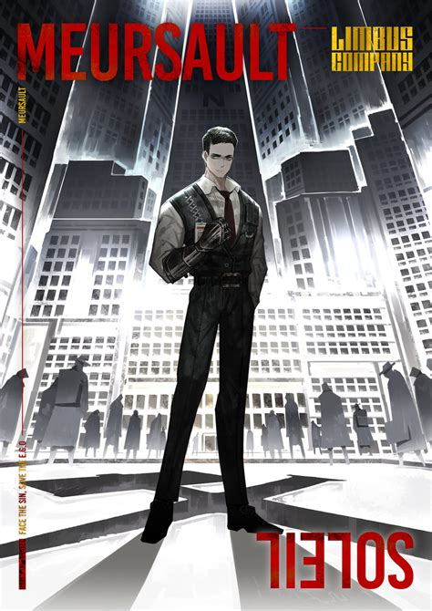

Merusault
Ability: Tremor
Designated Sinner #5 of Limbus Company's LCB department. A reserved and complacent man with a desire to be clearly communicated with.
Faction: LCB

Ability: Tremor
Designated Sinner #5 of Limbus Company's LCB department. A reserved and complacent man with a desire to be clearly communicated with.
Faction: LCB
Meursault was previously employed by N Corp. for an unknown length of time, and was a smoker before later quitting the habit. Meursault was put under trial due to commiting an unknown offense at N Corp., and by degree of "The Giants" he was exiled, with imprisonment as the penalty for noncompliance. As a child, Meursault was scolded by his mother in a way he describes as similar to the way that Outis reprimands Don Quixote.
Meursault is a very prompt man, speaking bluntly and concisely. Throughout his first few adventures with the LCB, Meursault is reserved and is emotionally distant, never emoting nor approaching matters from a non-logical standpoint. With time, Meursault had begun to share some of his thoughts and take initiative without being ordered to. Yet, his prolonged and inexpressive manner of speech often leads to others jumping to conclusions and cutting him off before he can finish speaking.